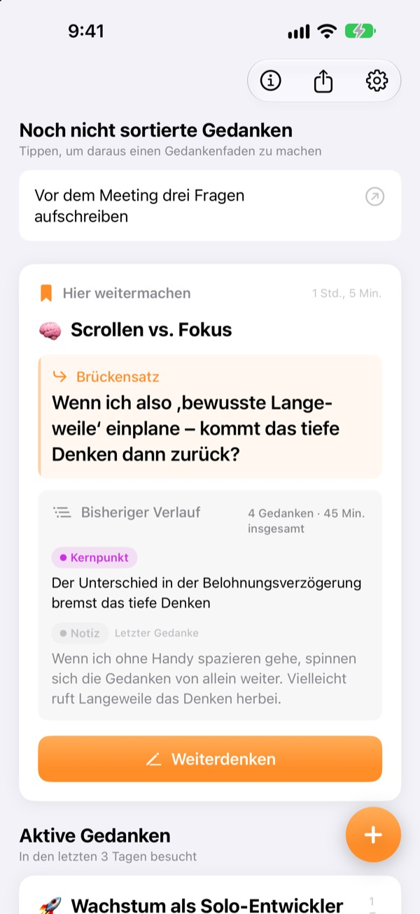
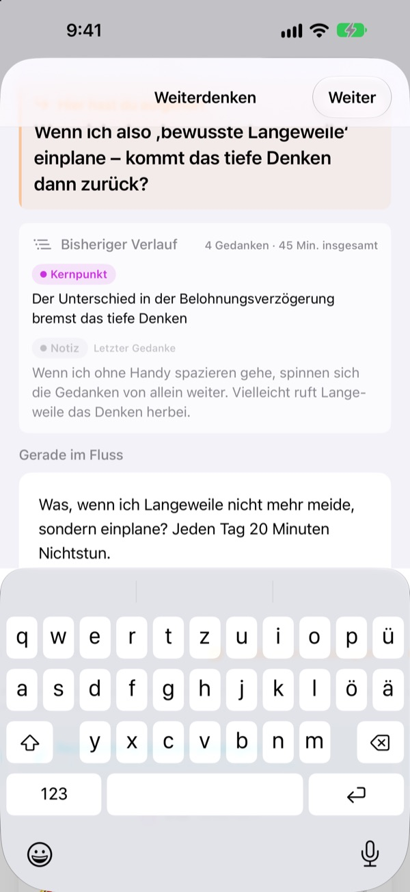
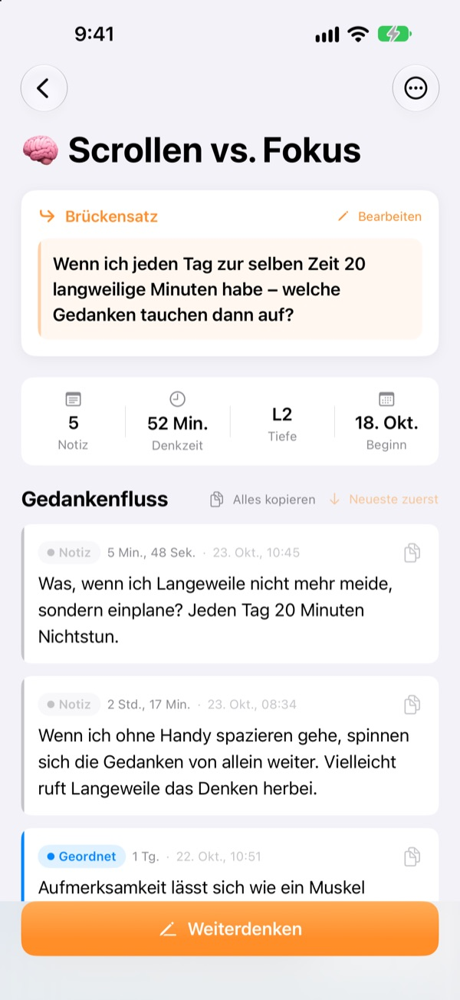
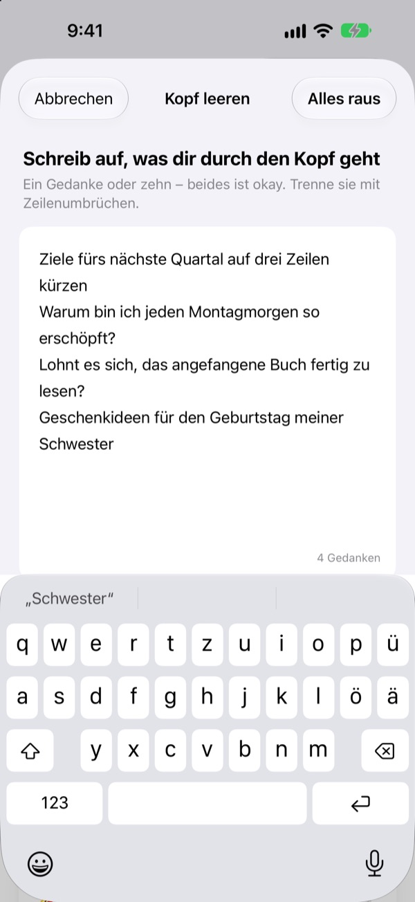

Der Gedanke von gestern,
heute genau an der Stelle weiter
Hörst du auf zu denken, hinterlässt du eine Zeile zum Weitermachen. Beim nächsten Öffnen wartet sie ganz oben auf dich.
Alle Funktionen sind kostenlos. Kein Konto, alles bleibt auf deinem Gerät.

Probier den Brückensatz aus
Schreib einen Gedanken und hinterlasse die Zeile, mit der du nächstes Mal weitermachst. Der Ablauf ist derselbe wie in der App.
Wo war ich eigentlich stehen geblieben?
Du öffnest eine Notiz von letzter Woche und findest ein paar Schlussfolgerungen, aber nicht die Frage, der du als Nächstes nachgehen wolltest. Also fängst du von vorn an. ThinkFlow lässt dich diese nächste Frage beim Aufhören festhalten, damit du beim Zurückkommen direkt dort einsteigst.
Dein Brückensatz wartet ganz oben
Beende eine Denkrunde mit einer Zeile: der Frage, mit der es weitergeht. Wenn du zurückkommst, stehen dieser Satz, die bisherigen Kernpunkte und dein letzter Gedanke auf einer Karte. Du musst nichts rekonstruieren.
Der Brückensatz erscheint auch im Widget auf dem Home-Bildschirm, und während du denkst, läuft die Zeit auf dem Sperrbildschirm und in der Dynamic Island.

Von der Notiz zum Kernpunkt
Heb jeden Gedanken durch vier Stufen: Notiz, geordnet, Kernpunkt und Zusammenfassung. So siehst du auf einen Blick, wie weit er gereift ist.
Was du nachgeschlagen oder gefragt hast, hängst du als Referenz an, getrennt von deinen eigenen Gedanken.

Erst mal den Kopf leeren
Schreib alles auf, was dir durch den Kopf geht, eine Zeile pro Gedanke, und wähl den, an dem du jetzt arbeiten willst. Daraus wird ein Gedankenfaden; der Rest wartet auf dem Startbildschirm, bis du ihn antippst.
Gedanken, die du länger als drei Tage nicht angefasst hast, landen unter Gedanken zum Wiederbeleben.

In drei Schritten loslegen
- 1
Kopf leeren
Eine Zeile pro Gedanke, dann den wählen, der wachsen soll.
- 2
Weiterdenken
Neue Ideen einzeln hinzufügen, dann lassen sie sich später leichter verfeinern.
- 3
Brückensatz setzen und schließen
Beim nächsten Mal startest du genau dort.
Verfeinerungsstufe
- Notiz
- Roher Gedanke
- Geordnet
- Einmal geordnet
- Kernpunkt
- Nur das Wesentliche
- Zusammenfassung
- Endgültige Zusammenfassung
Tippe auf das Stufen-Abzeichen neben einem Gedanken, um sie zu ändern. Kernpunkte und Zusammenfassungen stehen beim nächsten Öffnen zuerst auf der Karte.
Dein Brückensatz wartet ganz oben
Muss ich einen Brückensatz schreiben?
Wenn du etwas hinzugefügt hast, ja: Der Bildschirm Weiterdenken schließt sich erst, wenn du die nächste Zeile hinterlässt. Hast du nichts geschrieben, kannst du ihn einfach schließen. Der Trick: aufhören, solange du noch etwas zu sagen hast, nicht erst, wenn du feststeckst.
Was sind Gedanken zum Wiederbeleben?
Fäden, die du länger als drei Tage nicht geöffnet hast, werden auf dem Startbildschirm gesondert gesammelt. So kann auch ein fast vergessener Gedanke an seinem Brückensatz weitergehen.
Wie melde ich einen Fehler oder schlage etwas vor?
Nutze Feedback senden in den Einstellungen der App, schreib an die Adresse unten oder eröffne ein Issue unter github.com/M1zz/ThinkFlow/issues. Alles ist willkommen.
Ist wirklich alles kostenlos?
Ja. Alle Funktionen sind kostenlos, ohne Werbung und ohne Konto. „Entwickler unterstützen“ in den Einstellungen ist freiwillig und schaltet nichts frei.
Fragen oder Feedback? Schreib an leeo@kakao.com.